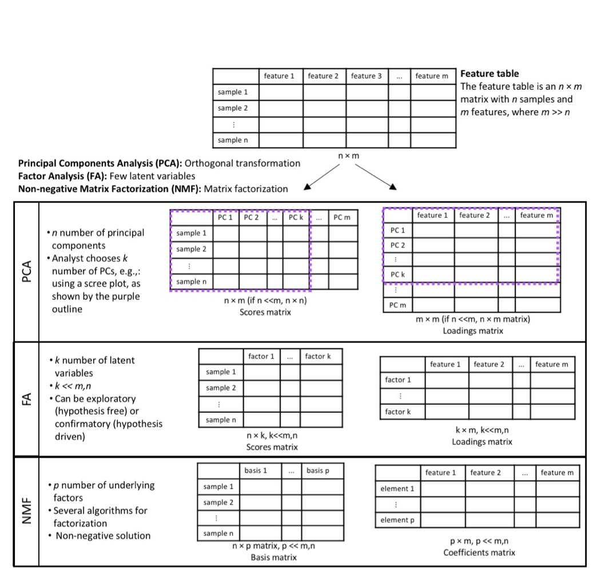

Dimensionn reduction is often used in omics data analysis. While the excerpt below relates to dimension reduction in the context of high-resolution mass spec data, here are other resources you can use for understanding dimension reduction:
Taken from Kalia et al, Unsupervised dimensionality reduction for exposome research, under review, 2020
"Exposomic data from HRMS are high-dimensional and complex. When untargeted methods are used to characterize the exposome, the number of chemical signals can be greater than 100,000 (Vermeulen et al. 2020). These data tables represent the primary input for bioinformatic and biostatistical analysis to evaluate biological meaning and to determine exogenously derived chemicals that may be of relevance to an outcome of interest. Since detected analytes are not annotated a priori, the results from HRMS contain information on each detected ion (a feature). Each feature is characterized by its mass-to-charge ratio, the retention time at which the compound eluted from the chromatographic column, and its abundance in the sample. Some features may arise from the same parent compound but during ionization may lead to formation of multiple ions with different masses with the same retention times. Therefore, the feature table may contain degenerate features which will be highly correlated since they arise from the same parent compound. Thus, correlation is present not only due to exposure sources and biological processes, but also arises from the analysis itself (Alonso, Marsal, and Julià 2015). This forces researchers to deal with the “curse of dimensionality” and to capture the essence of the data generated (Bellman 1966). Given the high correlations across chemical exposures, single chemical association studies are not appropriate, with implications for health that are missed using a “candidate” approach. Furthermore, high correlation compounds correction for multiple testing, decreasing study power and inflating the potential for false negatives.
Data dimensionality reduction approaches produce a manageable number of variables, allow for better visualization, remove redundant and uninformative variables, and reduce computational burden (Xue, Stahura, and Bajorath 2004). Several techniques have been described that reduce the size of the data table while minimizing loss of information, describing the essence of the data generated. These include unsupervised and supervised methods. In supervised methods, the outcome of interest informs the dimensionality reduction solution. These methods are used for feature selection and include—but are not limited to—different forms of penalized regression: least absolute shrinkage and selection operator (LASSO) (Tibshirani 1996), ridge regression (Hoerl and Kennard 1970), and elastic net regression (Zou and Hastie 2005), and different modifications of partial least squares regression (Lê Cao, Boitard, and Besse 2011, Nguyen and Rocke (2002)). Unsupervised methods do not take the outcome of interest under consideration during feature extraction. The goal in unsupervised dimensionality reduction is to discover the underlying structure in the data. These methods are tuned for pattern recognition that can aid in data visualization, data exploration, and uncovering latent variables. A popular method for unsupervised linear transformation of data is principal components analysis. Different unsupervised methods also exist for non-linear data transformations (Bartenhagen et al. 2010) like the kernel PCA (Smola 1999), isomap (Tenenbaum, De Silva, and Langford 2000) and autoencoders (Kingma and Welling 2014).
Principal components analysis is one of the most commonly used approaches for dimensionality reduction. The method uses an orthogonal transformation to convert a set of observations of possibly correlated variables into a set of linearly uncorrelated variables called principal components. The first component explains the most variance in the data and each succeeding component has the highest variance possible under the constraint that it is orthogonal, i.e., independent, to the preceding components (Jolliffe 2002). The method does not reduce the number of variables, m variables produce m components. The analyst chooses the number of components to include in analyses based on some a priori defined criterion/a, e.g., looking at the scree plot, selecting components with eigenvalues above one, or selecting the number of components that explain a pre-specified proportion of the variance in the data, e.g., at least 75%. Since PCA forces orthogonality between components, it imposes a rigid structure (Liland 2011). The alternating least squares variant of PCA, independent component analysis, is more successful in dealing with this rigidity but has less compression in the first components (Comon 1994)."

Visual representation of dimension reduction using PCA, FA, and NMF.
Alonso, Arnald, Sara Marsal, and Antonio Julià. 2015. “Analytical Methods in Untargeted Metabolomics: State of the Art in 2015.” Frontiers in Bioengineering and Biotechnology 3. doi:10.3389/fbioe.2015.00023.
Bartenhagen, Christoph, Hans-Ulrich Klein, Christian Ruckert, Xiaoyi Jiang, and Martin Dugas. 2010. “Comparative Study of Unsupervised Dimension Reduction Techniques for the Visualization of Microarray Gene Expression Data.” BMC Bioinformatics 11 (1): 567. doi:10.1186/1471-2105-11-567.
Bellman, Richard. 1966. “Dynamic Programming.” Science 153 (3731): 34–37.
Comon, Pierre. 1994. “Independent Component Analysis, A New Concept?” Signal Processing, Higher Order Statistics, 36 (3): 287–314. doi:10.1016/0165-1684(94)90029-9.
Hoerl, Arthur E., and Robert W. Kennard. 1970. “Ridge Regression: Biased Estimation for Nonorthogonal Problems.” Technometrics 12 (1): 55–67.
Jolliffe, I. T. 2002. Principal Component Analysis. 2nd ed. Springer Series in Statistics. New York: Springer-Verlag. doi:10.1007/b98835.
Kingma, Diederik P., and Max Welling. 2014. “Auto-Encoding Variational Bayes.” arXiv:1312.6114 [Cs, Stat], May. http://arxiv.org/abs/1312.6114.
Lê Cao, Kim-Anh, Simon Boitard, and Philippe Besse. 2011. “Sparse PLS Discriminant Analysis: Biologically Relevant Feature Selection and Graphical Displays for Multiclass Problems.” BMC Bioinformatics 12 (1): 253. doi:10.1186/1471-2105-12-253.
Liland, Kristian Hovde. 2011. “Multivariate Methods in Metabolomics – from Pre-Processing to Dimension Reduction and Statistical Analysis.” TrAC Trends in Analytical Chemistry 30 (6): 827–41. doi:10.1016/j.trac.2011.02.007.
Nguyen, Danh V., and David M. Rocke. 2002. “Tumor Classification by Partial Least Squares Using Microarray Gene Expression Data.” Bioinformatics 18 (1): 39–50. doi:10.1093/bioinformatics/18.1.39.
Smola, Alex. 1999. “Advances in Kernel Methods: Support Vector Learning.”
Tenenbaum, Joshua B., Vin De Silva, and John C. Langford. 2000. “A Global Geometric Framework for Nonlinear Dimensionality Reduction.” Science 290 (5500): 2319–23.
Tibshirani, Robert. 1996. “Regression Shrinkage and Selection via the Lasso.” Journal of the Royal Statistical Society. Series B (Methodological) 58 (1): 267–88. https://www.jstor.org/stable/2346178.
Vermeulen, Roel, Emma L. Schymanski, Albert-László Barabási, and Gary W. Miller. 2020. “The Exposome and Health: Where Chemistry Meets Biology.” Science 367 (6476): 392–96. doi:10.1126/science.aay3164.
Xue, Ling, Florence L. Stahura, and Jürgen Bajorath. 2004. “Cell-Based Partitioning.” In Chemoinformatics: Concepts, Methods, and Tools for Drug Discovery, edited by Jürgen Bajorath, 279–89. Methods in Molecular Biology™. Totowa, NJ: Humana Press. doi:10.1385/1-59259-802-1:279.
Zou, Hui, and Trevor Hastie. 2005. “Regularization and Variable Selection via the Elastic Net.” Journal of the Royal Statistical Society: Series B (Statistical Methodology) 67 (2): 301–20.